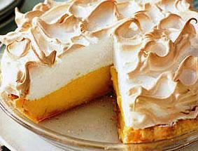

This pie is the ultimate combination of flaky pastry and tangy lemon filling under a light cloud of fluffy meringue. I will tell you – you cannot buy one like the one you will make! Just follow this recipe and you will have to agree that making it yourself is definitely worth it!
 Follow the Flaky Pastry recipe to make your crust.
Fit crust into 9-inch pie plate. Trim edges to 1-inch overhang;fold under and flute. Line with foil, fill with pie weights or dried beans, bake in bottom third of 400F oven for about 15 minutes. Remove foil and weights.
Prick shell all over; bake until golden – about 10 minutes. Let cool on the rack.
In heavy saucepan, mix sugar, cornstarch and salt – stir in water. Bring to boil over medium heat, stirring constantly. Remove from heat. Whisk one-quarter into egg yolks, whisk into pan. Cook over medium heat, stirring for 2 minutes. Remove form heat. Stir in lemon rind,lemon juice and butter and set aside.
Pour into cooled crust, smoothing top. Starting at edge and using spatula, spread meringue around outside of hot filling, sealing to crust to prevent meringue from shrinking. Spread over remaining filling, making attractive peaks with back of a spoon. Bake in the centre of 400F oven until golden – 5-6 minutes. Let cool on rack until set – about 5 hours.